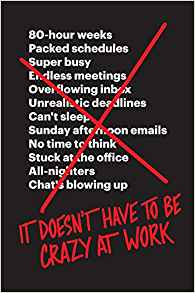
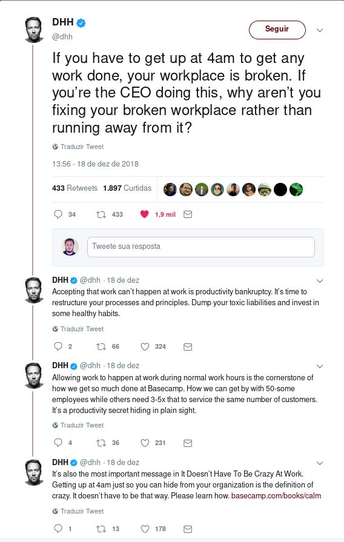

Trabalhar em um lugar calmo
Sobre o livro "It doesn't have to be crazy at work", de Jason Fred e David Heinemeier Hansson (DSS), falando da Basecamp.

https://basecamp.com/books/calm
Todo esse barulho em torno de estar, a qualquer hora em qualquer dia, absolutamente disponível à empresa, esconde grandes problemas.
A falta de amor próprio por parte dos empregados (em geral disfarce para o medo de ficar desempregado), além da irresponsabilidade por parte dos empregadores, são reflexões que me atormentam, quanto mais vou percebendo a ineficiência com que a maioria das empresas são conduzidas, e a coerção com que nós, empregados, nos acostumamos.
Li esses tweets do @dhh e fiquei impressionado:

Não devemos agir reativamente como animais, devemos nos preparar, nos organizar, preservar e acumular nossas forças, sermos eficientes.
Desenvolvimento de sistemas
Em ambientes tóxicos, nos vemos simpáticos aos que destroem nossa saúde física e mental. Justamente na área de TI, muitas vezes vista como o repositório de inteligência da empresa, estão as pessoas mais acríticas e submissas. Em geral, isso nada mais é que a tão conhecida Síndrome de Estocolmo.
Forçar os empregados a trabalhar até mais tarde para cumprir prazos que estouraram por planejamento falho ou inadequado. Forçar os empregados a trabalhar de madrugada para não desestabilizar o sistema e afetar usuários.
Isso é ser:
- Adepto do jeitinho malandro.
- Incompetente.
- Irresponsável.
Malandro por saber que será assim, e não tomar nenhuma atitude. Incompetente por não dominar as novas técnicas de administração de sistemas e processos. Irresponsável por manter empregados em estado permanente de stress e baixo rendimento.
Avanços na tecnologia e nos processos
Passamos por uma grande evolução no desenvolvimento de sistemas. Estamos na era do DevOps, do desenvolvimento ágil, da nuvem. Tudo para não termos surpresas, nem ficarmos apavorados diante de desastres.
Com DevOps automatizamos inclusive a recuperação de desastres, automatizamos a publicação segura de alterações. Com desenvolvimento ágil não jogamos mais grandes alterações no ar de uma só vez. Tudo é planejado e implementado ao longo do tempo, cada pequena alteração é testada a cada passo do desenvolvimento, e tão logo seja considerada sem erros, já pode ser publicada, inclusive, automaticamente. Com a nuvem, não nos ocupamos mais de gerenciar servidores físicos, e temos a redundância de nossos dados e sistemas ativadas a um clique ou comando no terminal.
A única desculpa para o desespero e as longas jornadas de trabalho é o "eu quero fazer assim, não quero fazer do jeito certo". Sequer argumentos orçamentários podem ser usados, dada a diversidade de opções e preços baixos dos diversos fornecedores.
Pura irresponsabilidade.
O que fazer?
Aprofundar-se em dominar as novas técnicas e procedimentos e formas de organização. Usá-los com maestria. Demonstrar como o cenário atual é ineficiente, inseguro e inapropriado.
Sustentar-se é muito importante, mas manter-se saudável para garantir o sustento é muito mais. Em geral, não podemos "meter o loko", a forma mais segura e saudável de ser um colaborador pró-ativo e engajado, é lutando para melhorar os processos e a organização da empresa, enquanto isso não prejudicar igualmente a saúde física e mental. Há lutas que não valem à pena, há empresas que não valem à pena.
Apenas sobreviva enquanto arruma outro emprego, enquanto adquire novos conhecimentos. E o livro do DHH?
Leia! Reflita! Repense sua vida.